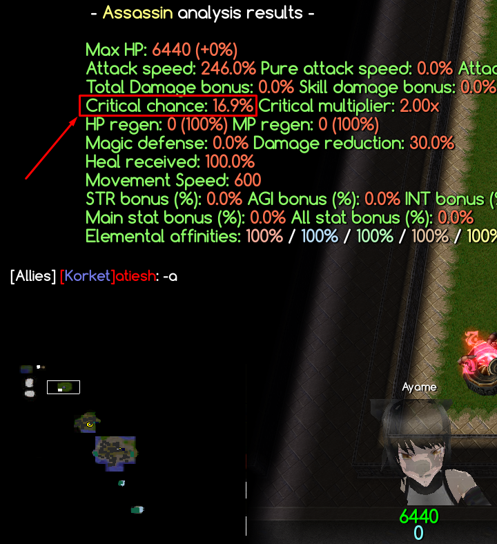
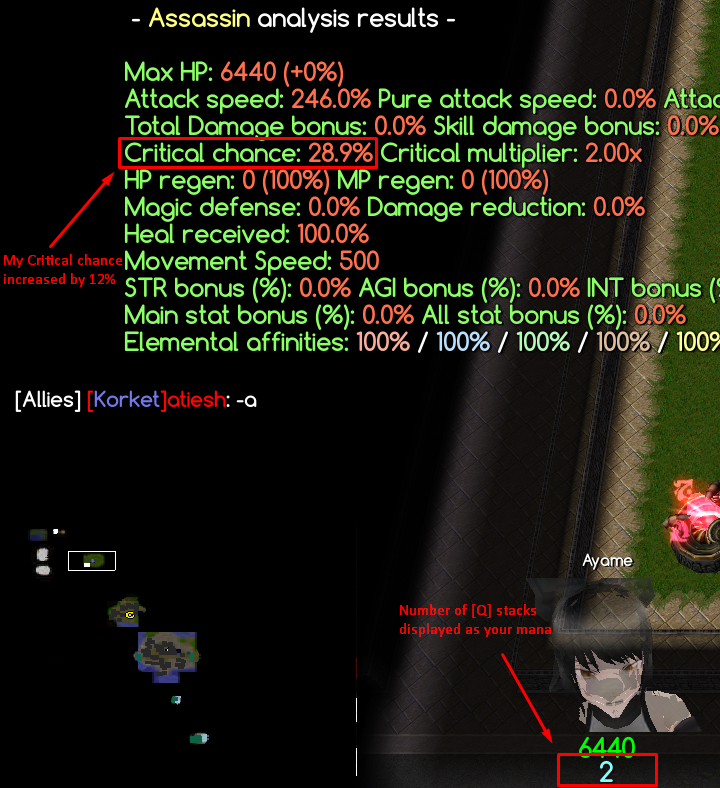
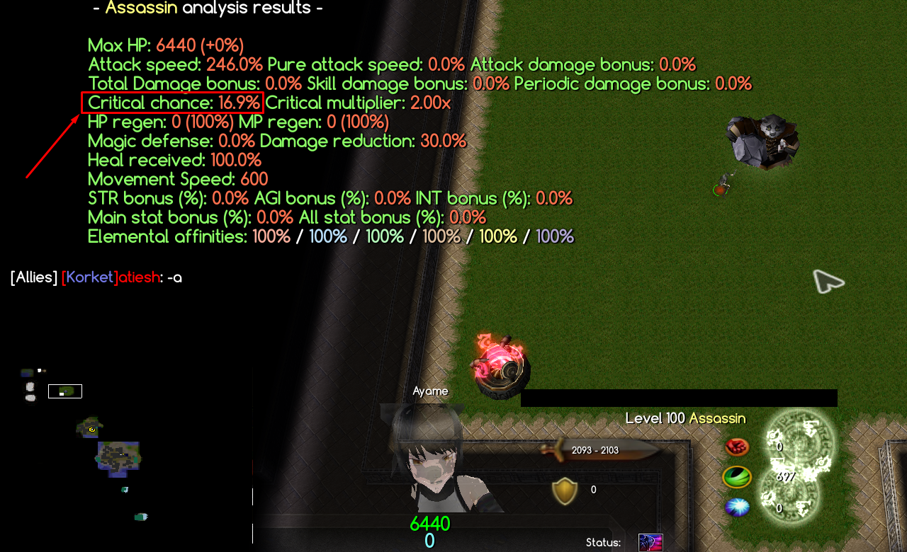
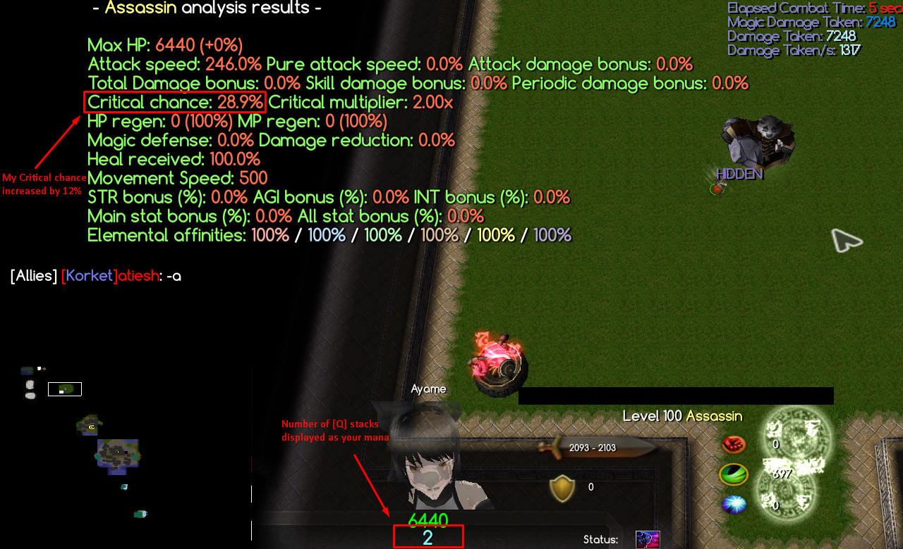

Introduction
"Both sides of war tend to avoid fighting in the night because 'she' wanders around.." - A Survivor of Empire War
Assassin is a damage dealer class that is focused on casting skills from melee to mid range. She is excellent at dealing both AoE and single target damage. With her, you don’t have to worry about getting aggroed since she has a unique skill called Dark Shroud, which allows her to be invisible all the time. Her playstyle involves short combo rotations.
Abilities
[D] Dark Shroud

[Proc Co-efficient]: 1
[Passive]
Ability to meld into darkness and assassinate effortlessly. ∴ Allows all skills to critically strike ∴ Enters stealth if out of combat for 2.5 seconds ∴ While stealthed, movement speed is increased by 75 and damage taken is reduced by 30%
[Toggle]
∴ TOGGLE OFF: Enable invisibility ∴ TOGGLE ON: Disable invisibility
[Passive]
Ability to meld into darkness and assassinate effortlessly. ∴ Allows all skills to critically strike ∴ Enters stealth if out of combat for 2.5 seconds ∴ While stealthed, movement speed is increased by 75 and damage taken is reduced by 30%
[Toggle]
∴ TOGGLE OFF: Enable invisibility ∴ TOGGLE ON: Disable invisibility
[Q] Shadow Slash

[Proc Co-efficient]: 1
[Active]
Slashes enemey's weak point. ∴ Attack damage X 0.4 + AGI X 4 magic damage ∴ If hit, obtains Shadow Mark for 5 seconds, increasing critical chance by 6% (stacks up to 5 times) ∴ Upon reaching max stacks, duration no longer refreshes but cooldown of Ambush is reset
Cooldown: 3 seconds
[Active]
Slashes enemey's weak point. ∴ Attack damage X 0.4 + AGI X 4 magic damage ∴ If hit, obtains Shadow Mark for 5 seconds, increasing critical chance by 6% (stacks up to 5 times) ∴ Upon reaching max stacks, duration no longer refreshes but cooldown of Ambush is reset
Cooldown: 3 seconds
[W] Ambush

[E] Shadow Walk

[R] Smoke Bomb

[T] Shadow Rush

[Proc Co-efficient]: 1
[Active]
Summons shadows from all directions and rush toward the target point. ∴ AGI X 20 magic damage ∴ Summons 5 additional shadows that copy next Shadow Slash or Ambush, each dealing 50% of original damage ∴ When max stacks of Shadow Mark is obtained, can be activated immediately regardless of cooldown
Cooldown: 15 seconds
[Active]
Summons shadows from all directions and rush toward the target point. ∴ AGI X 20 magic damage ∴ Summons 5 additional shadows that copy next Shadow Slash or Ambush, each dealing 50% of original damage ∴ When max stacks of Shadow Mark is obtained, can be activated immediately regardless of cooldown
Cooldown: 15 seconds

Having invisibility means you will not be seen by the enemies; hence, you won't aggro anything while invisible. Also while invisible, you are immune to some CC effects (stun and slow).
This passive allows your skills to critically strike, that's why our builds will be focused on crit related items.
As the description says, using this skill increases your critical chance by 6% per stack, up to a maximum of 5 stacks. So that means you would get 30% critical chance bonus at max stacks.
Each stack of this skill will be displayed on your mana. If your mana shows 2/5, that means you have 2 stacks of [Q].




Since this skill has 3 seconds cooldown, it would take you too long to get max stacks.
That's why we have to combine it with [T]. Using [T] allows you to deal 6 [Q]s in a single moment.
Other than using it for the initial combo to build up stacks, you should use this skill to deal extra damage when all of the other skills are on cooldown. But be careful of unwanted [T] reset.
This skill also resets the cooldown of [W] when you reach max stacks.
Since this skill gives you an extra 25% of attack damage after usage, you should always use [W] first before doing your big damage combo, because most of your skill scales with attack damage.
Even though the damage may look small, if you combine it with [T], it will deal huge damage.
This skill is usually used first as an opening for gap closer between bosses, but when you are in melee range, use [Q] first before [W], since it resets [Q] after usage.
This is another damage-dealing skill you use; usually you use it at the end of your combo rotations.
Before you use this, make sure you still have [W] buff to have the extra attack damage bonus, and you are behind the enemy boss to get 50% extra damage.
You can also use this skill in an emergency, when you are in a tight position and want to evade boss skills since it gives you a temporary movement speed bonus.
Equipments
These are the recommended equipments.
Strategies
These are the strategies.